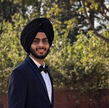

My Resume

Introduction/Summary
My Name is Adab Singh Malhi and I am an aspiring computer science student with a focus on Artificial Intelligence and Machine Learning, currently beginning my first year at Chitkara University. Passionate about technology and actively learning web development to build a strong foundation in full-stack development. Eager to apply theoretical knowledge to practical projects and grow through hands-on experience. Committed to continuous learning and building real-world skills in software development.
Education
Chitkara University
B.E. Computer Science Engineering (AI & ML)
2025 – 2029 (Expected)
- Currently enrolled in first year
- Focus areas: Artificial Intelligence, Machine Learning, Programming, Web Development
-
Senior Secondary (Class 12), CBSE
Graduated: 2024
- Scored 85% overall
- Stream: Non-Medical (Physics, Chemistry, Mathematics, English, Computer Science)
- Appeared for JEE Mains 2024, scored 85 percentile
-
Secondary (Class 10), CBSE
Graduated: 2022
-
Scored 92% overall
- Strong academic performance in Mathematics and Science
Experience
-
Self-Learning Web Development
2025 – Present
- Learning the basics of HTML, CSS, and JavaScript through online resources and practice.
- Built simple static web pages to understand structure and styling.
- Exploring responsive design and beginner-level DOM manipulation.
-
Python Programming (Beginner Level)
2025 – Present
-
Gained foundational knowledge of Python syntax, data types, and control structures.
- Practicing basic programs, loops, functions, and simple logic building.
- Working towards learning file handling, object-oriented programming, and libraries
Skills
Core Strengths:
- Strong foundation in Mathematics, Physics, and Chemistry
- Excellent logical reasoning and problem-solving skills
- Quick learner with a growth mindset and curiosity for technology
Technical Skills:
- Beginner-level knowledge of HTML, CSS, JavaScript, and Python
- Understanding of basic programming concepts and logic building
- Currently learning web development and exploring real-world applications
Soft Skills
- Analytical thinking
- Self-motivated and disciplined
- Eager to take initiative and learn through hands-on practice
Current Awards and Achievements
- Scored 92% in Class 10 (CBSE) – Strong performance in core subjects like Math and Science
- Secured 85% in Class 12 (Non-Medical stream) – Maintained consistency in academics
- Achieved 85 percentile in JEE Mains 2024, showcasing strong analytical and problem-solving ability
- Recognized by teachers for being a logical thinker and fast problem solver during school assessments and competitive preparation
- Self-initiated learning in web development and programming outside of academics
About Me
Contact Me
My Hobbies